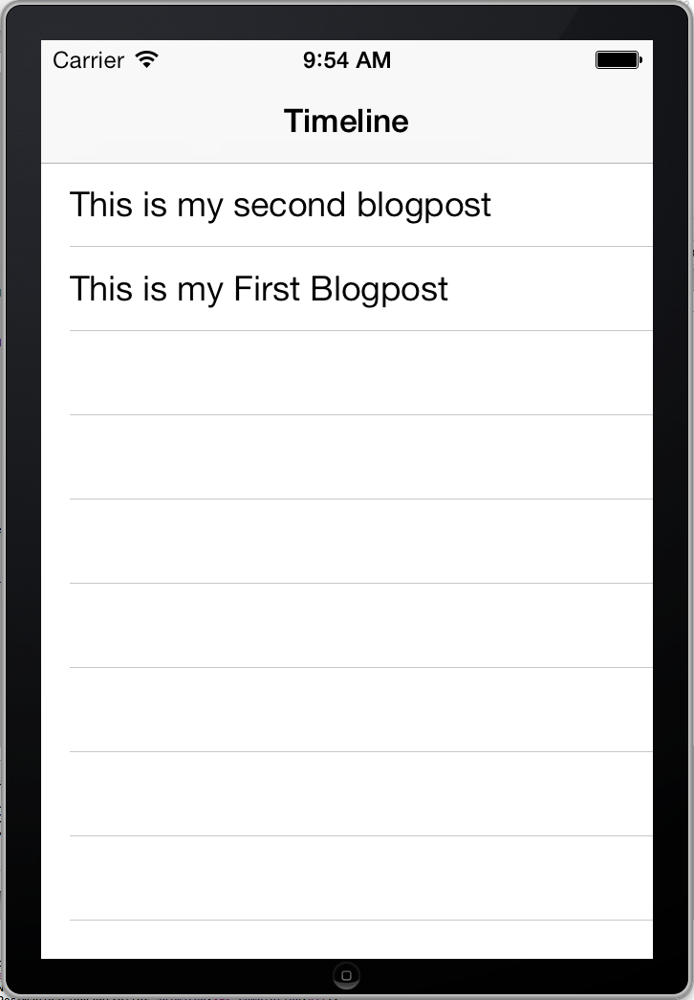
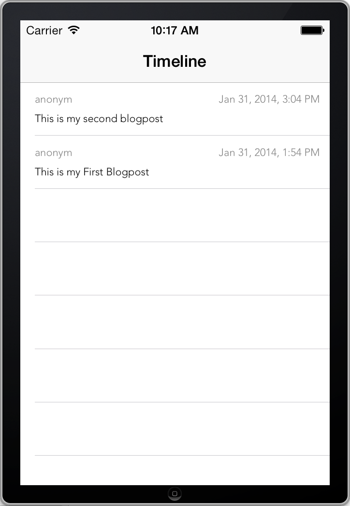

Previously we built a working backend for our microblogging application. It’s time to create an iOS application which uses the API.
Start XCode and create a new project. Choose the “Empty Application” template and name the application microblog.
For interacting with the API we will use RestKit. For the sake of convenience we will use CocoaPods as dependency manager.
This is what the Podfile looks like:
platform :ios, '7.0'
pod 'RestKit', '~> 0.20.0'
link_with 'microblog'
To fetch the dependencies close XCode and run:
$sh pod install
Then open the workspace:
$sh open microblog.xcworkspace
We want to present the created blogposts in a UITableView.
Create a controller named TimelineViewController which inherits from UITableViewController. This is what the controller looks like:
TimelineViewController.h:
#import <UIKit/UIKit.h>
@interface TimelineViewController : UITableViewController
@end
TimelineViewController.m:
#import "TimelineViewController.h"
@implementation TimelineViewController
- (id)initWithStyle:(UITableViewStyle)style {
self = [super initWithStyle:style];
if(self){
self.title = @"Timeline";
}
return self;
}
- (void)viewDidLoad
{
[super viewDidLoad];
}
@end
In the AppDelegate we have to modify the application: didFinishLaunchingWithOptions: method to instantiate a TimeLineViewController, which we use as rootViewController:
- (BOOL)application:(UIApplication *)application didFinishLaunchingWithOptions:(NSDictionary *)launchOptions
{
self.window = [[UIWindow alloc] initWithFrame:[[UIScreen mainScreen] bounds]];
// instantiate a TimeLineViewController and use it as rootViewController
TimelineViewController* timeLineViewController = [[TimelineViewController alloc] initWithStyle:UITableViewStylePlain];
UINavigationController* timeLineNavigationController = [[UINavigationController alloc] initWithRootViewController:timeLineViewController];
self.window.rootViewController = timeLineNavigationController;
self.window.backgroundColor = [UIColor whiteColor];
[self.window makeKeyAndVisible];
return YES;
}
Add the missing import:
#import "TimelineViewController.h"
So we have an app which presents the empty TimelineViewController within a navigationController.
As in the backend we need a representation of the BlogPost model. Create a new class which inherits from NSObject, named BlogPost.
BlogPost.h:
#import <Foundation/Foundation.h>
#import <RestKit/RestKit.h>
@interface BlogPost : NSObject
@property(nonatomic, copy) NSString* blogPostId;
@property(nonatomic, copy) NSDate* created;
@property(nonatomic, copy) NSString* text;
@property(nonatomic, copy) NSString* creator;
-(NSString*)formattedDate;
+(RKObjectMapping *)mapping;
@end
BlogPost.m:
#import "BlogPost.h"
@implementation BlogPost
+(RKObjectMapping*)mapping {
RKObjectMapping* mapping = [RKObjectMapping mappingForClass:[BlogPost class]];
[mapping addAttributeMappingsFromDictionary:@{@"id": @"blogPostId",
@"created": @"created",
@"text": @"text",
@"creator": @"creator"
}];
return mapping;
}
-(NSString*)formattedDate {
NSDateFormatter *dateFormatter = [[NSDateFormatter alloc] init];
[dateFormatter setTimeStyle:NSDateFormatterShortStyle];
[dateFormatter setDateStyle:NSDateFormatterMediumStyle];
[dateFormatter setDoesRelativeDateFormatting:YES];
return [dateFormatter stringFromDate:self.created];
}
@end
The interface defines all the properties a blogPost has. Because id is a reserved keyword we name it blogPostId here.
We implement the two methods declared in the interface.
The mapping defines how RestKit will map the JSON data returned from the API. For details about mapping see: Object Mapping
The formattedDate method returns a string representation of the created property. Later we will use that for the view representation of the posts.
Before we can fetch the data from our API, we have to setup RestKit. So create setUpRestKit method in the AppDelegate:
- (void)setUpRestKit {
NSURL* url = [NSURL URLWithString:@"http://localhost:9210"];
RKObjectManager* manager = [RKObjectManager managerWithBaseURL:url];
[manager.HTTPClient setParameterEncoding:AFJSONParameterEncoding];
[manager setRequestSerializationMIMEType:RKMIMETypeJSON];
NSIndexSet* statusCodes = RKStatusCodeIndexSetForClass(RKStatusCodeClassSuccessful);
RKResponseDescriptor* blogPostGetResponse = [RKResponseDescriptor responseDescriptorWithMapping:[BlogPost mapping]
method:RKRequestMethodGET
pathPattern:@"/blogposts"
keyPath:@"data.blogposts"
statusCodes:statusCodes];
[manager addResponseDescriptorsFromArray:@[blogPostGetResponse]];
[RKObjectManager setSharedManager:manager];
}
Within the first four lines we setup an RKObjectManager with the base url of the backend. We also ensure that the manager sends json and interprets the response data as json.
The ResponseDescriptor defines that the /blogposts endpoint will return a 200 OK status when a GET request gets performed. The returned json contains a data object with a blogposts list (KeyPath: data.blogposts). Every object in this list will be deserialized as a BlogPost object using the [BlogPost mapping] we defined earlier.
Of course you have to call the setUpRestKit method at app launch:
- (BOOL)application:(UIApplication *)application didFinishLaunchingWithOptions:(NSDictionary *)launchOptions
{
self.window = [[UIWindow alloc] initWithFrame:[[UIScreen mainScreen] bounds]];
[self setUpRestKit];
...
To show the created posts in the timline, edit the TimeLineViewController:
@interface TimelineViewController ()
@property(nonatomic, strong)NSArray* blogPosts;
@end
@implementation TimelineViewController
- (id)initWithStyle:(UITableViewStyle)style {
self = [super initWithStyle:style];
if(self){
self.title = @"Timeline";
self.blogPosts = @[];
}
return self;
}
- (void)viewWillAppear:(BOOL)animated {
[self refresh:nil];
}
- (void)refresh:(id)sender {
[[RKObjectManager sharedManager] getObjectsAtPath:@"/blogposts"
parameters:nil
success:^(RKObjectRequestOperation *operation, RKMappingResult *mappingResult) {
self.blogPosts = [mappingResult array];
[self.tableView reloadData];
} failure:^(RKObjectRequestOperation *operation, NSError *error) {
// TODO: handle the errors
}];
}
# pragma mark - TableView
- (NSInteger)numberOfSectionsInTableView:(UITableView *)tableView {
return 1;
}
- (NSInteger)tableView:(UITableView *)tableView numberOfRowsInSection:(NSInteger)section {
return [self.blogPosts count];
}
- (UITableViewCell*)tableView:(UITableView *)tableView cellForRowAtIndexPath:(NSIndexPath *)indexPath {
static NSString *CellIdentifier = @"TimelineTableViewCell";
UITableViewCell* cell = [tableView dequeueReusableCellWithIdentifier:CellIdentifier];
if( cell == nil){
cell = [[UITableViewCell alloc] initWithStyle:UITableViewCellStyleSubtitle reuseIdentifier:CellIdentifier];
[cell setSelectionStyle:UITableViewCellSelectionStyleNone];
}
// Configure the cell to show the blogpost text
BlogPost* blogPost = [self.blogPosts objectAtIndex:indexPath.row];
[[cell textLabel] setText:blogPost.text];
return cell;
}
Everything below the TableView mark is standard TableView handling. For details see About Table Views in iOS Apps
Within the refresh method we use RestKit to fetch all objects at /blogposts. Because RestKit is configured to map the results of /blogposts as BlogPost models, we just have to assign the mapped results to self.blogPosts and reload the TableView.
If you start the backend and the ios app, you will see the created blogposts.

Because the UITableViewCell clips large texts and we want the cells to show the date and creator of the blogpost, we create our own BlogPostTableViewCell:
Note
You don’t have to create the view programmatically, if you prefer to use Interface Builder.
After adding them to the project, you have to update the cellForRowAtindexPath method:
- (UITableViewCell*)tableView:(UITableView *)tableView cellForRowAtIndexPath:(NSIndexPath *)indexPath {
static NSString *CellIdentifier = @"TimelineTableViewCell";
BlogPostTableViewCell* cell = [tableView dequeueReusableCellWithIdentifier:CellIdentifier];
if( cell == nil){
cell = [[BlogPostTableViewCell alloc] initWithStyle:UITableViewCellStyleSubtitle reuseIdentifier:CellIdentifier];
[cell setSelectionStyle:UITableViewCellSelectionStyleNone];
}
BlogPost* blogPost = [self.blogPosts objectAtIndex:indexPath.row];
[cell setBlogPost:blogPost];
return cell;
}
Also implement the heightForRowAtIndexPath method, defined in the UITableView delegate:
- (CGFloat)tableView:(UITableView *)tableView heightForRowAtIndexPath:(NSIndexPath *)indexPath {
return [BlogPostTableViewCell heightForBlogPost:[self.blogPosts objectAtIndex:indexPath.row]];
}
This is what the app looks like:

To implement Pull to Refresh just add a UIRefreshControl in viewDidLoad, which calls the refresh method:
- (void)viewDidLoad
{
[super viewDidLoad];
self.refreshControl = [[UIRefreshControl alloc] init];
[self.refreshControl addTarget:self
action:@selector(refresh:)
forControlEvents:UIControlEventValueChanged];
}
It’s also necessary to end refreshing after the data is loaded. To do this add the following line to the success and failure blocks located in the refresh method:
[self.refreshControl endRefreshing];
The success block now looks like:
success:^(RKObjectRequestOperation *operation, RKMappingResult *mappingResult) {
self.blogPosts = [mappingResult array];
[self.tableView reloadData];
[self.refreshControl endRefreshing];
}